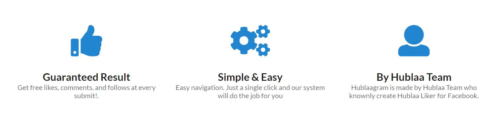
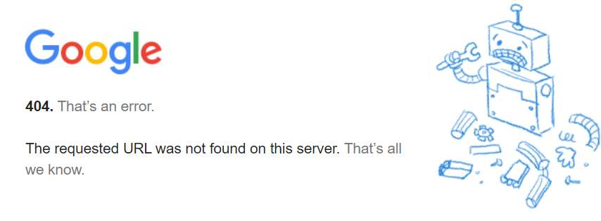
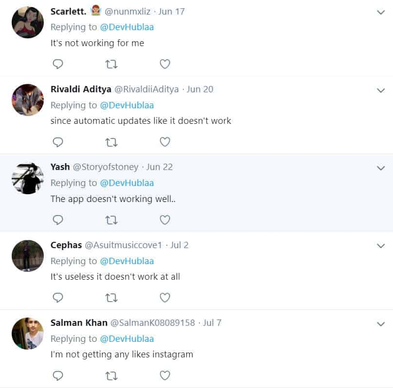
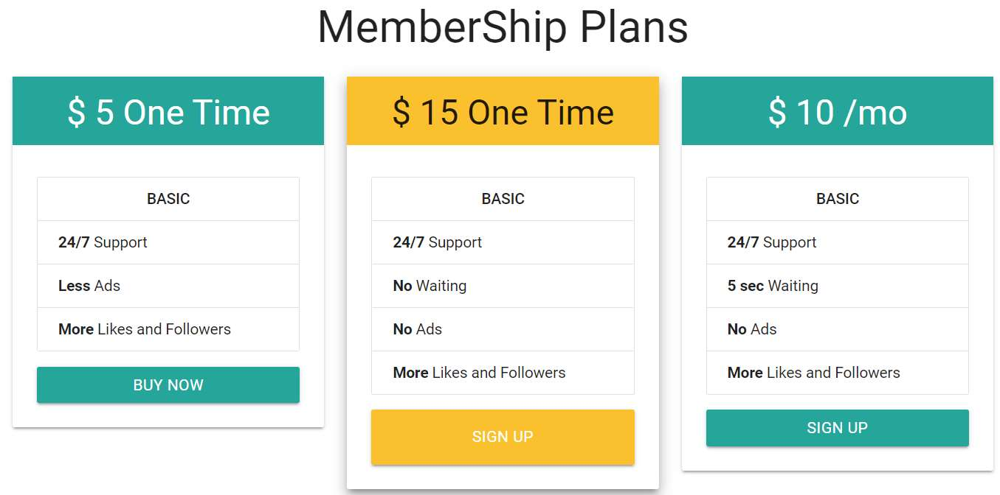

Want to know if Hublaagram is worth it? Are there better alternatives? Hublaagram is an Instagram bot designed to get you more likes, followers, and comments.
You can choose to download the APK file for Android or install the web browser extension for Google or Firefox. It also looks like the company has plans to launch on the Apple store too.
Look:
Now, I’ll cut the chase. I didn’t have a good experience with Hublaagram. Not only was their service sub-par, but I encountered some strange pop-ups on their website. Not to mention a bunch of broken links. Suffice to say, I was not impressed.
So if you’re convinced Hublaagram is not worth it, I’ll share some of my favorite alternatives below.
Our Favorite Hublaagram Alternatives
1 – Kenji
Kenji can be used to quickly build an audience on Instagram. The tool uses artificial intelligence to generate activity on your Instagram account.
It also has tons of anti-spam filters, so you don’t need to worry about Instagram blocking your account. Kenji is also a great choice for budget marketers.
You can sign-up to their free 3-day trial to take it for a test run.
2 – Upleap
Upleap’s slogan is, “Get More Instagram Followers with a Dedicated Account Manager”.
And that’s exactly what the tool does. Instead of running scripts on your account, as most bots do, Upleap assigns a professional account manager to you. With this system, you can expect steady organic growth.
Upleap is a little more expensive, but if you’re serious about growing your social media accounts, it’s worth looking into.
The best part is they also offer a 3-day trial with no credit card required.
Very cool.
How Does Hublaagram Work?

Curious to know how Hublaagram works and why we don’t recommend them?
To start with, finding accurate information about this app is rather difficult because they have many different websites that advertise a variety of features. It’s not clear which website is real. It also seems to go by the name Hublaa Helper.
From what I could gather, Hublaagram’s system is a little different. What the system does is exchange activity with other accounts every 10 minutes, such as followers, likes, and comments.
For example, you can choose to submit your followers to the platform, and then receive followers from other people submitting their followers. In other words, it’s like a crowd-sourced pool of Instagram activity. You put something in and get something back.
As far as I can tell, that’s the main concept.
Hublaagram’s Core Features
If you manage to get through the spam, Hublaagram has a few core features:
- Instaliker
- Instacomment
- Instafollow
They all work basically the same, exchanging activity with other members.
Instaliker is another way of saying buying Instagram likes.
What you do is choose the number of likes you want, and the post you want them on and hit purchase. It doesn’t interact with accounts like other apps, it straight up sends likes your post.
Speaking of Instagram likes, want to learn the best way to get Instagram likes?
And as you can imagine, the likes come from fake profiles.
Here’s the thing:
Most of the links on the website don’t work, so there’s no real way to test the app.
Red Flags
While testing out this app, I kept running into red-flags after red-flags.
1 – Strange Pop-ups 🚩
Now this one bothered me the most. I simply clicked on the link to watch a tutorial on how the tool works and my browser was redirected to an adult webcam website. Very unprofessional.
It happened every time I clicked on a link too. I’m not sure if that was intentional, or the website was hacked, either way, it’s inappropriate.
The other Hublaagram websites were riddled with spam too, either gambling sites or random squeeze pages for making money online.
Keep in mind, I had ad-block enabled too.
2 – Multiple Poorly Made Company Websites 🚩
Another major red flag is the fact that the app has multiple websites with its name on it. And the funny part is they’re all equally as bad.
Here’s a list I managed to find, there may be more:
- Hublaagram.to
- Hublaagram.me
- Instagramrealfollowers.com
- Hublaagram.co.id
The other websites also have lots of pop-ups and broken links. It’s clear the team behind Hublaagram isn’t very professional.
The Instagram Real Followers website has more information than the rest, but it’s insecure. And when you click on “Packages” you’re redirected to another website about buying Instagram likes.
Very strange.
3 – Absolutely No Filters 🚩
To make matters worse, the tool provides absolutely no filters. It allows anyone to submit and receive followers for anyone. No way to vent followers.
What this means is you – more often than not – end up with tons of fake profiles, with no profile pictures, no bios, and a bunch of numbers in their user handle. Terrible.
It’ll take a long time to purge these accounts from your profile.
Getting more followers on Instagram is always nice, but if they do nothing for your business, it’s worthless.
4 – Might Steal Your Password 🚩
Based on what I have seen on the website, I’m sure Hublaagram is not a safe tool.
I wouldn’t give them the password to my main Instagram account, that’s for sure.
If their websites are riddled with spam, there’s a good chance they’ll steal your password and data.
Be careful.
5 – APK Download Only 🚩
At the moment, there’s only the option to down their APK file which is unverified and a little risky.
It’s not on Google Play or Apple, and their Chrome extension doesn’t work either.

In fact, it redirects to a broken link. The only way to access the app is via their APK download from a third-party website.
To do that, you’ll need to have an Android phone and enable unverified app installations on it.
Risky. Not recommended.
6 – No About Page 🚩
Hublaagram’s websites do not reveal any information about who created the tool.
Actually, there’s hardly any information at all. It looks quite suspicious. Even the knowledge base is completely empty.
On one of their websites, they say “Hublaagram is not made by a single person but by Hublaagram Team who would like to stay anonymous”.
7 – Official Hublaa Account on Twitter Has Two Tweets 🚩
I managed to find the company’s Twitter account, and it only has two Tweets.
On those Tweets, there are responses from Hublaagram users, most of which are saying the service does not work.

Their second Tweet is asking for Facebook accounts because all of their accounts got banned.
If all their Facebook accounts got banned, do you really think your Instagram will be safe?
I know I wouldn’t want to take that risk.
How Much Does It Cost?
You’re probably wondering how much Hublaagram costs.
Since there are multiple websites (and they all mention different services and prices) it’s hard to get a clear answer regarding the price.
From what I could tell, the core exchange service is free, but the Autoliker costs $20/month. The Autoliker sends new likes to your latest posts, that’s it.
Look at this screenshot:

On another website, it claims to have three packages:
- $5 one-time for Basic
- $15 one-time.
- $10/month.
The problem is the sign-up button links don’t even work. Nothing happens when you click them.
Anything Positive?
I don’t want to be too negative here, but I was having a hard time finding anything to like about this tool.
One thing I could mention is it’s actually free. It’s not on a trial either, you can use it for free as much as you want if it ever works.
If you don’t care so much about building a target audience, only numbers, then you could probably increase those numbers a bit with this tool.
On the other hand, building a targeted audience with this tool is practically impossible.
To me, I feel like it’s straight-up spam. Fake followers, Likes from fake accounts, and spam-like comments – nothing that will benefit a social media business.
Not sure how to build an authentic audience? Read this.
Our Conclusion: AVOID Hublaagram!
It’s no secret we promote our own Instagram tools, but even when it comes to a tool we don’t officially recommend, I usually say it’s worth trying out, at least.
Unfortunately, I can’t say that about Hublaagram. I really didn’t have a good experience with this app, and it didn’t even work for me. Not to mention all the weird pop-ups and spam.
I got the impression it was designed by a one-man team and abandoned because it’s half-done.
My recommendation is to avoid Hublaagram. It’s just too suspicious.
Are There Any Hublaagram Alternatives?
The two tools mentioned at the beginning of this article are a couple of great alternatives, Kenji and Upleap.
But if you’re not too keen on those, feel free to take a look at our full list of recommended Instagram tools.
Honestly, there are lots of decent Instagram tools. My advice is to avoid the full-scale Instagram bots unless you know how to configure them with proxies and virtual private servers.
Stick a tool that doesn’t spam too much and keeps activity in the normal to moderate levels. It’s much safer, in the long run.
Thanks for taking the time to read this Hublaagram review.


1 Comment